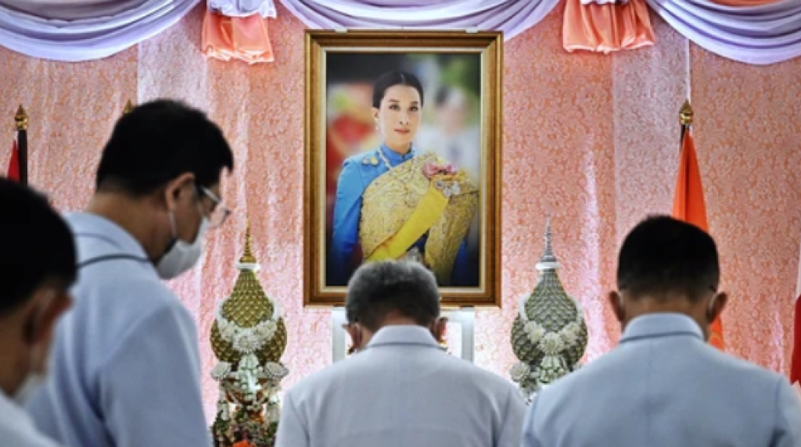

Thailand's Royal 'Crisis' After Princess's Demise

DOSE Team
December 21, 2022The princess widely considered to be the successor to Thailand's throne is on life support after she fell unconscious from a sudden heart condition last week, the Thai palace said Monday in the first acknowledgment of the graveness of her ailment. Princess Bajrakitiyabha's heart contractions were weak, and her heart, lungs, and kidneys “are being supported by machine,” the palace said in a statement. The palace previously said she was “stable to a certain extent” without sharing further information.
The eldest daughter of Thailand's King Maha Vajiralongkorn, the 44-year-old collapsed on Wednesday while training her dogs in Nakhon Ratchasima, a city north of the capital Bangkok. She was rushed to a nearby hospital before being flown by helicopter to Bangkok's King Chulalongkorn Memorial Hospital, where she is being treated. Pavin Chachavalpongpun, an associate professor of Thai politics at Kyoto University in Japan, told VICE World News last week that the princess' collapse might trigger a “crisis in succession” in Thailand. Pavin Chachavalpongpun, an associate professor of Thai politics at Kyoto University in Japan, told VICE World News last week that the princess' collapse might trigger a “crisis in succession” in Thailand.
“Up to this point, the Thai palace has never officially announced that she would be the next person in line for succession,” he said. “But the thing that led the Thai people to believe [that she would be the king's heir] is because she is the eldest daughter of the current king. A lot of Thai people like to think that she has pure royal blood.”
Technically first in line to the throne is Prince Dipangkorn Rasmijoti, her 17-year-old half-brother and the only recognized son of the king—though for years there have been rumors that he has a developmental disability. While male heirs are traditionally favored in the country's history of royal succession, a constitutional amendment in 1974 allowed princesses to become the monarch in the absence of a previously appointed successor. If appointed, Princess Bajrakitiyabha would be the first woman to ascend to the throne.
The Thai monarchy, known for its far-reaching political powers and opaque processes, has faced increasing scrutiny in recent years. When pro-democracy protests swept the country in 2020, activists called for reforms to the monarchy and rallied against harsh lese-majeste laws that banned any criticism of the Thai royal family. Since then, public opinion about the royal institution has remained firmly polarized, with staunch supporters on one end and anti-royalists on the other. Met with the news of the princess' sudden health crisis, many around the country sprang into action, offering support in their own ways. Senior leaders visited the princess at the hospital last week after her collapse, while a section of the hospital has been reserved for people to pen down encouraging messages in “get-well books” for the princess. Monks around the country have been instructed by religious authorities to insert blessings for the princess during their daily morning and evening prayers.
But as some jot down well wishes, others are going down a royal rabbit hole on social media, speculating about the princess' condition and Thailand's next monarch. Rumors have been flying about the princess' health since the palace released its first statement on the matter on Thursday, saying that she “fell unconscious due to a heart condition” but was “stable to a certain extent.” Some reports suggested that she was in worse shape than publicly admitted, before the palace's statement on Monday confirmed that she was on life support.